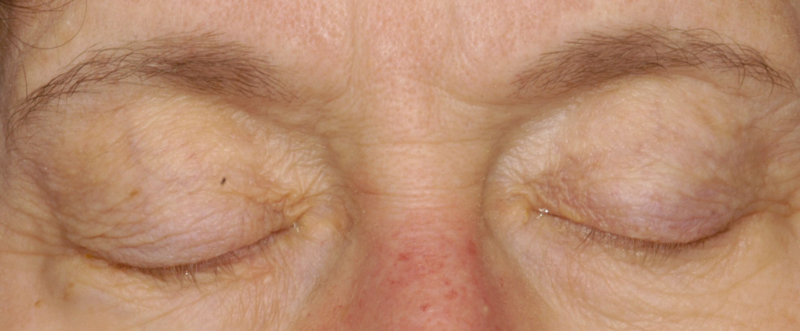

Benign Essential Blepharospasm

- Involuntary bilateral lid closure
- May be idiopathic, focal dystonia, or facial tic
-
Core clinical features
- Intermittent bilateral activation of orbicularis oculi produces squeezing of eyelids and eye closure
- No pertinent neurologic or systemic illness
-
Possible accompanying clinical features
- Initial symptom is photophobia
- Episodes become more frequent and easier to provoke over time
- Exacerbated by social interactions
- Relieved by ritual maneuvers like humming, meditating, touching face
- Tic-like mouthing movements (“Meige syndrome”)
- Bilateral severe ptosis, but that would not have orbicularis oculi contraction, which will be visible as lowered brows and raised lower lids
- Dermatochalasis, but can be distinguished as loose overhang of upper lid
-
Trap: many patients with blepharospasm are initially misdiagnosed as having ptosis and dermatochalasis, triggering surgery for these conditions
- Dry eye syndrome, other surface keratopathies, uveitis, cone dystrophy, albinism, meningitis, migraine, anxiety, which may cause squinting but not blepharospasm
- Apraxia of lid opening, but can be distinguished by accompanying parkinsonian features


-
Rule out imitators by finding their corroborative signs
- Corneal epithelial defects, rapid tear break-up time, as in ocular surface disease
- Anterior uveitis
- Narrowed retinal arterioles, as in cone dystrophy
- Bradykinesia, rigidity, tremor, as in parkinsonism
- Involuntary facial movements, as in tic disorder
- Try anxiolytic medication or psychotherapy if you diagnose anxiety
- If no underlying cause is found, prescribe periocular botulinum toxin injections
- Botulinum toxin injections usually provide adequate relief for 3–4 months and must be repeated indefinitely
- Side effects of botulinum toxin injections--ptosis, exposure keratopathy, diplopia—are temporary and tolerable
- Patients who fail botulinum toxin treatment may sometimes get relief from anxiolytics or psychotherapy aimed at obsessive compulsive disorder
- Orbicularis oculi myectomy is rarely necessary